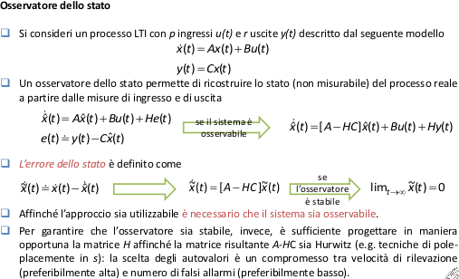

Individuazione guasti con osservatore dallo stato
Le tecniche di individuazione guasti mediante osservatore dello stato utilizzano l’errore tral’uscita misurata del processo reale e quella di un modello matematico (in spazio di stato) per generare residui: esse rientrano, insieme alle tecniche basate su equazioni di parità, nell’area della diagnosi basata su modello.
Come nel caso delle equazioni di parità si suppone che la struttura e che i parametri del modello siano noti (i.e. si suppone che sia possibile creare un modello matematico del processo reale).
Gli osservatori dello stato ricostruiscono le variabili di stato in funzione delle condizioni iniziali e dell’evolvere nel tempo delle misure di ingresso e di uscita provenienti dal processo reale.
la presente lezione fornisce una panoramica delle tecniche di individuazione (e isolamento)guasti mediante l’utilizzo di:
- osservatori dello stato di tipo classico (Luenberger);
- filtro di Kalman;
inoltre presenta un confronto tra le tecniche di individuazione basate su equazioni di parità e le tecniche di individuazione basate su osservatore, mettendo in risalto le similarità tra i due differenti approcci.

Osservatore dello stato: Guasti Additivi


Osservatore dello stato: guasti moltiplicativi